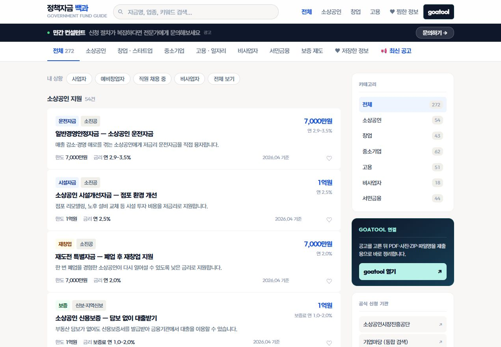
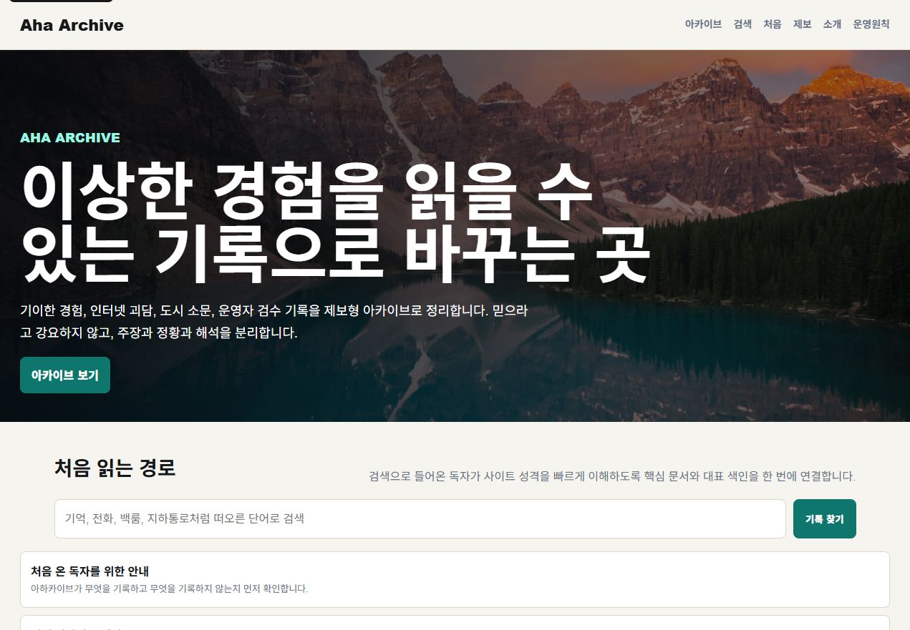
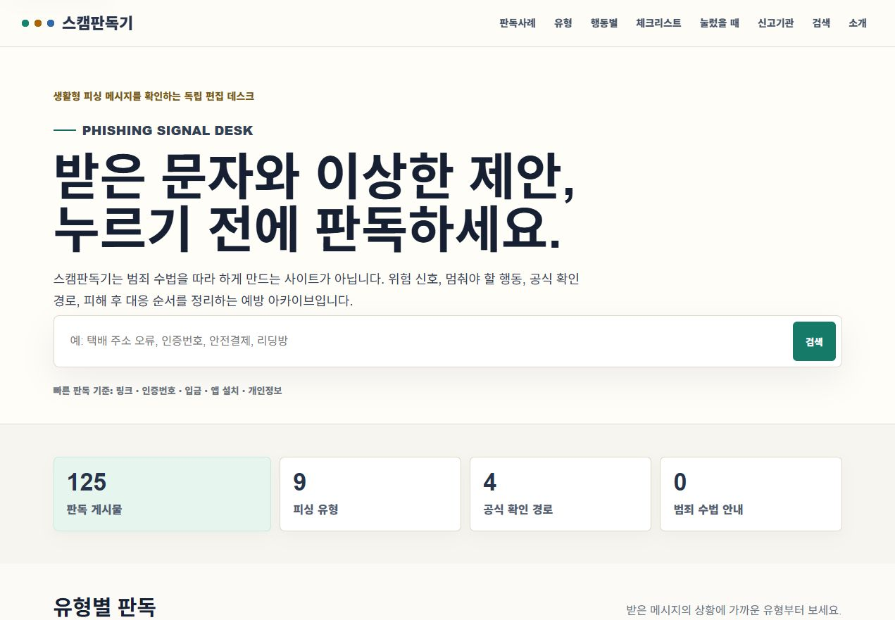

사용자가 실제로 검색하는 질문을 기준으로 카테고리와 상세 문서를 나눕니다.
Information Hub
검색으로 들어온 사용자가 다음 문서까지 이동하게 만듭니다.
정보형 사이트는 예쁜 첫 화면보다 검색 의도, 카테고리, 상세 문서, 관련 글의 연결이 먼저입니다. J MEDIA는 콘텐츠가 쌓일수록 강해지는 구조를 기준으로 설계합니다.

01 · STRUCTURE
문서가 늘어나도 무너지지 않는 뼈대를 먼저 잡습니다.
한 문서를 읽고 끝나는 구조가 아니라 관련 문서로 자연스럽게 이동하게 만듭니다.
새 글이 추가되어도 제목, 본문, 관련 글, CTA 위치가 흔들리지 않도록 템플릿화합니다.

